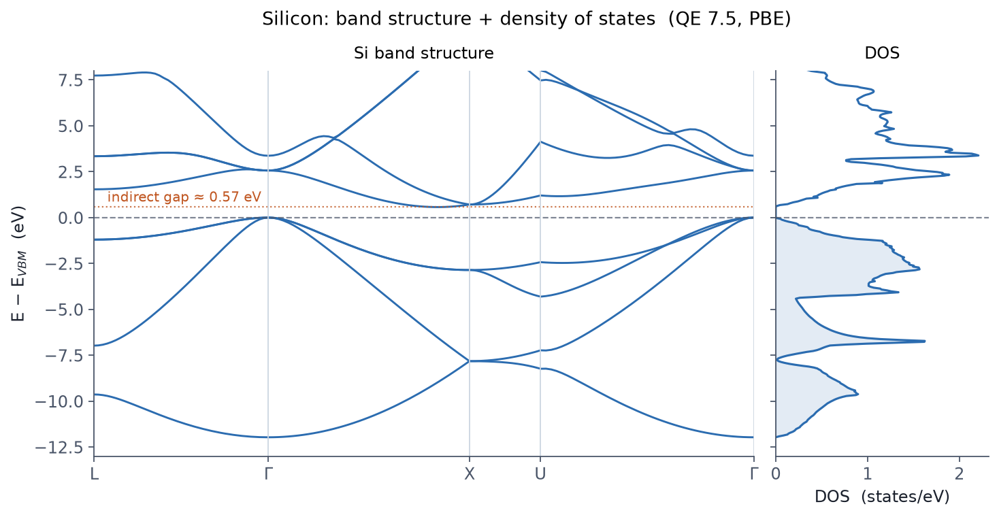

무엇을 하는 예제인가
E1 의 실리콘 SCF를 이어받아, 밴드구조와 상태밀도(DOS)를
구합니다. scf → bands → bands.x 로 밴드를, scf → nscf → dos.x 로 DOS를 얻는
표준 흐름을 한자리에서 실행합니다.
관련 개념은 07 밴드와 DOS에서 다룹니다.
1단계 — SCF
먼저 E1의 si.scf.in 과 동일한 SCF를 돌려 전하밀도를
./out 에 저장합니다.
export OMP_NUM_THREADS=1
mpirun -np 8 pw.x -nk 8 -in scf.in > scf.out
2단계 — 밴드 경로 계산 + bands.x
고대칭점 L–Γ–X–U–Γ 을 잇는 경로에서 고윳값을 계산합니다.
&control
calculation = 'bands'
prefix='si', outdir='./out', pseudo_dir='./pseudo'
/
&system
ibrav=2, celldm(1)=10.26, nat=2, ntyp=1, ecutwfc=40, ecutrho=320, nbnd=8
/
&electrons
conv_thr=1.0d-8
/
ATOMIC_SPECIES
Si 28.0855 Si.pbe-n-rrkjus_psl.1.0.0.UPF
ATOMIC_POSITIONS (alat)
Si 0.00 0.00 0.00
Si 0.25 0.25 0.25
K_POINTS {crystal_b}
5
0.5000 0.5000 0.5000 40 ! L
0.0000 0.0000 0.0000 40 ! Γ
0.5000 0.0000 0.5000 40 ! X
0.6250 0.2500 0.6250 40 ! U
0.0000 0.0000 0.0000 1 ! Γ
mpirun -np 8 pw.x -nk 8 -in bands.in > bands.out
이어 bands.x 로 고윳값을 밴드별로 정렬합니다.
&bands
prefix='si', outdir='./out', filband='si.bands.dat'
/
bands.x -in bandsx.in > bandsx.out
si.bands.dat.gnu(k-거리 vs 에너지)와 함께 bandsx.out 에 고대칭점 위치가
출력됩니다.
3단계 — DOS (nscf + dos.x)
촘촘한 격자에서 nscf로 고윳값을 구하고 dos.x 로 상태밀도를 만듭니다.
&control
calculation = 'nscf'
prefix='si', outdir='./out', pseudo_dir='./pseudo'
/
&system
ibrav=2, celldm(1)=10.26, nat=2, ntyp=1, ecutwfc=40, ecutrho=320
occupations='tetrahedra'
/
&electrons
conv_thr=1.0d-8
/
...
K_POINTS (automatic)
16 16 16 0 0 0
mpirun -np 8 pw.x -nk 8 -in nscf.in > nscf.out
# dos.x: &dos prefix='si', outdir='./out', fildos='si.dos', DeltaE=0.05 /
dos.x -in dosx.in > dosx.out
결과

밴드구조에서 원자가 밴드 최대(VBM)가 Γ에, 전도 밴드 최소(CBM)가 X 근처에 있어 간접 반도체임이 보입니다. PBE 간격 0.57 eV는 실험값(약 1.1 eV)보다 작은데, 이는 표준 DFT의 알려진 특성입니다(07장).
요점
- 밴드/DOS는 SCF 전하밀도를 고정한 nscf 계산 —
prefix·outdir일치가 핵심. - 밴드구조는 경로 k점(
crystal_b) +bands.x. - DOS는 촘촘한 격자 +
tetrahedra+dos.x. - 궤도별 기여가 필요하면
projwfc.x(투영 DOS).
관련 개념 챕터
앞 예제는 E1 — Si SCF, 다음은 E3 — 금속 smearing 입니다.